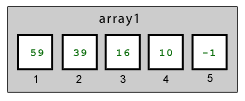

Data structures are simply ways of arranging data that the computer understands. For media computation, you will mostly work with two structures: the array and the matrix.
Arrays
An array is something like a list; it is a sequence of data elements. Arrays can be very short, just five or ten elements, or very long, thousands and even millions of elements. Each element in an array has both an index, which indicates its position in the array, and a value, which is the data it holds. A common way of thinking about arrays is as a row of boxes.

When we do media computation, we don't usually define arrays from scratch, we use functions like getSamples or getPixels that create arrays for us.
If you did want to define an array of numbers from scratch, this is how you would do it:
>>> array1 = [59,39,16,10,-1]
A matrix is a sequence of data elements that has two dimensions. Each element in a matrix has both a pair of indices that indicate its position in the matrix, and a value, which is the data it holds. You can imagine a matrix as a kind of map with vertical and horizontal coordinates.

When we do media computation, we rarely create matrices from scratch. Instead, we use x and y coordinates that tell us the horizontal(x) and vertical(y) positions.
If you wanted to define a matrix of numbers in Jython, this is how you would do it:
>>> matrix1 = [[59,36,16,10,-1],[33,150,2],[87,-35]]